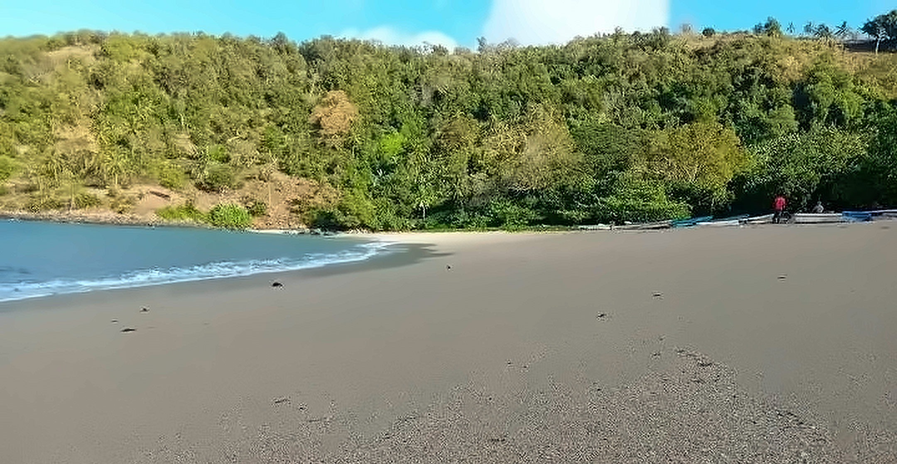

MoheliGoTRAVERSÉES MARITIMES
AVIS DE MER
OUROVENI · CHINDINI · HOANI · FOMBONI
OUROVENI · CHINDINI · HOANI · FOMBONI
LA MER DÉCIDE.ON TE LE DIT.
Ce qu’on sait, et ce qu’on ne sait pas encore.
Avant que tu descendes au port.
APPELLE AVANT DE DESCENDRE
WHATSAPP +269 479 43 28moheligo.com
Prévision Open-Meteo Marine. Nous ne décidons pas des départs :
nous publions la mer.